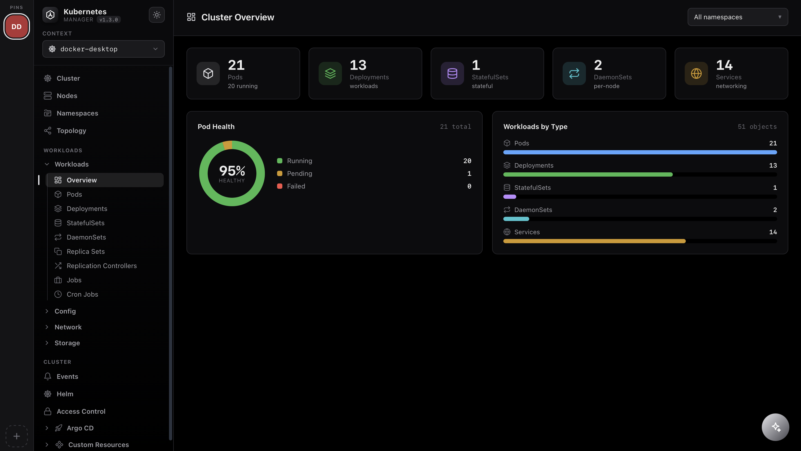
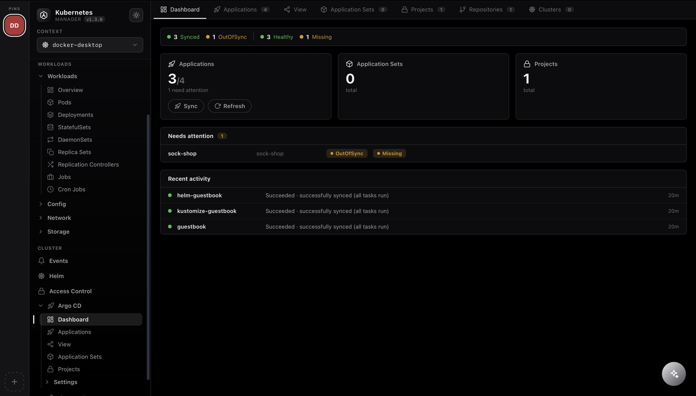
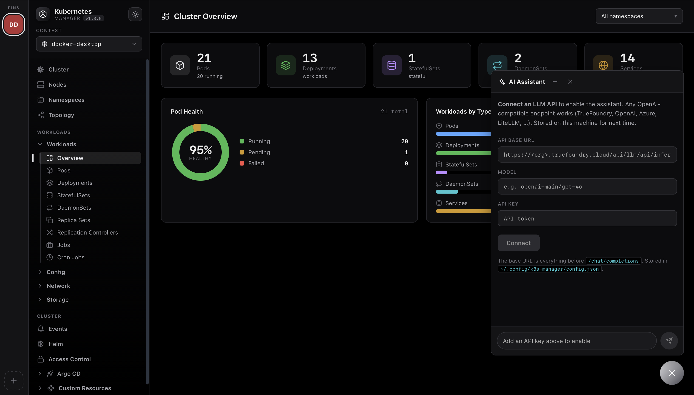

A modern dashboard for browsing and operating any Kubernetes cluster using your local kubeconfig — live metrics, pod logs, interactive shells, topology, Helm, Argo CD, and a built-in AI debugging assistant.
Free & open-source · Apple Silicon .dmg · Multi-arch container image

Browse workloads, watch live metrics, stream logs, open a shell, forward ports and inspect topology — without leaving the window.
Node and pod health donuts, workload charts and real capacity — an at-a-glance overview the moment you connect.
Pods, Deployments, StatefulSets, DaemonSets, Services and more — with live CPU/memory from metrics-server and per-container status.
A real TTY into any pod — kubectl exec -it streamed over WebSocket to a full xterm.js terminal.
Pan & zoom the graph of Deployment → ReplicaSet → Pod → Service relationships to understand what talks to what.
Search, tail and format logs with per-container selection. Logs, terminal and YAML tabs sit side by side in a bottom panel.
Forward a Service port straight to localhost — pick a port or grab a random one, no CLI juggling.
Lazy-loaded CRD tree with YAML details, plus Helm releases with their values and rendered manifests.
A right-side panel with metadata, live metric graphs, conditions and containers — cross-linked namespace → node → pod → owner.
One-click theme switch — a crisp light mode and a redesigned true-black dark mode, token-driven and persisted across sessions.
Pin your favourite kubeconfig contexts to a left-hand rail and jump between dev, staging and prod clusters in a single click.
Expose the same read-only tools to your own agents over the Model Context Protocol — via HTTP or stdio, with write tools off by default.
Running Argo CD? The app auto-detects it and adds a full Argo CD workspace — no argocd CLI and no separate login. It reads the Application CRDs straight from your cluster using your kubeconfig’s own RBAC.

Every Application with live sync and health status, quick filters, and a needs-attention view that surfaces whatever is drifting or unhealthy.
Open an app for its managed resource tree, sync parameters, and full sync/rollout history — each resource with its own sync and health badge.
Trigger a Sync with prune, dry-run, apply-only, force or replace — or a soft/hard Refresh — right from the drawer.
Browse ApplicationSets, AppProjects, connected Git/Helm repositories and destination clusters — the whole Argo CD picture.
Select many Applications and sync or refresh them together — with an opt-in multi-select so you always choose exactly what runs.
One click hands an app’s sync/health condition and failing resources to the assistant for a root-cause read (needs your own LLM subscription).
argocd namespace exists
🔗 Opens your external Argo CD UI when configured
🔒 Uses your kubeconfig RBAC — no extra credentials
Click the ✨ button and ask in plain English — “why is this pod not ready?” or “any warning events in kube-system?”. It runs an agentic tool-use loop over read-only cluster data and streams the answer back token by token.

kubectl command when a change is needed.checkout-7d9f pod is Pending because no node can satisfy its request of 2 CPU — all nodes are at capacity. Either scale the deployment down, add a node, or lower the CPU request. To inspect: kubectl describe pod checkout-7d9f.Grab the native macOS app, or spin it up anywhere with the official Docker image. Both serve the same UI on top of your kubeconfig.
A native Kubernetes Manager.app that starts the server and opens the UI in its own window. It reconstructs your shell PATH so kubectl is found automatically.
.dmg and drag the app to Applications.kubectl installed locally.The image bundles Node and kubectl. Mount your kubeconfig read-only and open the mapped port.
# pull & run — UI on http://localhost:8080 docker run --rm -p 8080:3001 \ -v "$HOME/.kube:/home/node/.kube:ro" \ praveenraghav/k8s-manager-ui:latest
docker pull praveenraghav/k8s-manager-ui:latest
-e LLM_BASE_URL=… -e LLM_API_KEY=… -e LLM_MODEL=… (needs a paid LLM subscription).kubectl on your PATH
⎈ Helm releases read via the API — no helm CLI needed
📄 A working kubeconfig
📊 metrics-server for live CPU/memory
Install the macOS app or pull the container — you'll be exploring workloads in under a minute.